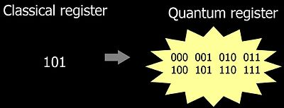

Искусственный интеллект
Иску́сственный интелле́кт (ИИ; англ. artificial intelligence, AI) — свойство искусственных интеллектуальных систем выполнять творческие функции, которые традиционно считаются прерогативой человека (не следует путать с искусственным сознанием); наука и технология создания интеллектуальных машин, особенно интеллектуальных компьютерных программ. Искусственный интеллект связан со сходной задачей использования компьютеров для понимания человеческого интеллекта, но не обязательно ограничивается биологически правдоподобными методами.Существующие на сегодня интеллектуальные системы имеют довольно узкие области применения. Например, программы, способные обыграть человека в шахматы, как правило, не могут отвечать на вопросы.
Квантовые компьютеры
Квантовые компьютеры могут обрабатывать данные на порядки быстрее, чем классические компьютеры. Эта технология только начинает развиваться, но уже сегодня есть реальные применения в науке и бизнесе. Ква́нтовый компью́тер — вычислительное устройство, которое использует явления квантовой механики (квантовая суперпозиция, квантовая запутанность) для передачи и обработки данных. Квантовый компьютер (в отличие от обычного) оперирует не битами (способными принимать значение либо 0, либо 1), а кубитами, имеющими значения одновременно и 0, и 1. Теоретически это позволяет обрабатывать все возможные состояния одновременно, достигая существенного преимущества (квантового превосходства) над обычными компьютерами в ряде алгоритмов. Полноценный универсальный квантовый компьютер является пока гипотетическим устройством, сама возможность построения которого связана с серьёзным развитием квантовой теории в области многих частиц и сложных экспериментов; разработки в данной области связаны с новейшими открытиями и достижениями современной физики. На начало 2020-х годов практически были реализованы лишь единичные экспериментальные системы, исполняющие фиксированные алгоритмы небольшой сложности. Первым практическим высокоуровневым языком программирования для такого вида компьютеров считается язык Quipper , основанный на Haskell
3 бита обычного регистра против 3 кубитов квантового
Интернет вещей
Интернет вещей (IoT) - это сеть устройств, которые соединены между собой и с интернетом. Эта технология уже используется в самых разных областях, от умного дома до логистики и медицины.